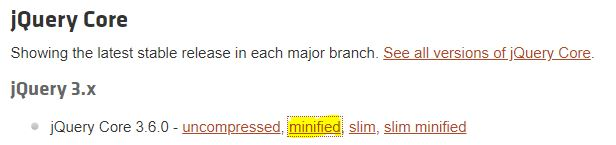

According to jquery.com, jQuery is a fast, small, and feature-rich JavaScript library. It makes things like HTML document traversal and manipulation, event handling, animation, and Ajax much simpler with an easy-to-use API that works across a multitude of browsers. With a combination of versatility and extensibility, jQuery has changed the way that millions of people write JavaScript.
This tutorial will walk you through the basics of how to execute jQuery commands, where to access jQuery libraries, and will demonstrate how to utilize jQuery on your site.
First, in order to complete this demonstration, you will need an HTML document with a simple h1 tag. Using your preferred editor, create an HTML document with an h1 tag.
In order to utlize jQuery, you need to locate a jQuery CDN (content delivery network) and add the link location into your HTML document in a script tag. Let's start with locating our jQuery CDN. First, navigate to the jQuery CDN.
Once there, you'll be presented with several options. Best practice is to use the most up to date release of jQuery, which in this case is 3.6.0. As you can see from the screenshot, there are several options including an uncompressed, minified, slim, and slim minified. Minification is the process of minimizing code and markup in your web pages and script files. It's one of the main methods used to reduce load times and bandwidth usage on websites, so best practice is to use a minified version. Let's select jQuery Core 3.6.0 minified by right clicking on the word "minified" and selecting Copy Link Address.
Return to your HTML document and insert the following script in the head of your HTML document.
<script src=''></script'>;
Paste the web address you copied from the jQuery CDN between the single quotation marks and then 💾 Save your document. Your document should now look like this:
<!DOCTYPE html>
<html lang="en">
<head>
<script src='https://code.jquery.com/jquery-3.6.0.min.js'></script'>;
</head>
<body>
<h1>jQuery is fun!</h1>
</body>
</html>
A more visual represntation of this code demonstration can be seen on JSfiddle. Let's make sure everything is working. Navigate to your webpage and open your browser's inspector by right clicking in the document window and selecting "Inspect" or "Inspect Element". Navigate to the Console and type the dollar sign and press enter. Depending on which browser's tools you're using, you will see a return of the fuction definition as shown on the table below:
Now, let's see what we can do with jQuery. This simple demonstration will show you how to add some animation to your website. For our code demonstration, we have a simple html document with an h1 tag. We will select our h1 tag using proper jQuery syntax. Selecting in jQuery is similar to in CSS except that with jQuery, we use a $ at the beginning of our selector. The proper syntax for selecting our h1 tag is:
$("h1");
Now that we have our h1 tag selected, lets do something with it. Let's use it to animate our h1 tag. First, let's go over the proper syntax for jQuery animations, which is as follows:
$(selector).animate({params},speed,callback;
To understand this better, let's set animation up to utilize our selector using the following code:
<script>
$(document).ready(function() {});
</script>;
Let's talk about what this code means. We open our script tag for a jQuery function, much like we do for a regular JavaScript function with the <Script> tag. The next line in our code calls the document with the "$(document)" text, then tells the document that upon page load, execute the following function. The syntax for this is ".ready(function)({})". We then split our function open:
<script>
$(document).ready(function() {
});
</script>;
Select our h1 tag, and tell it what we want it to do:
<script>
$(document).ready(function() {
$("h1").hide().slideDown(800)
});
</script>;
As you can see, we first use the $ to begin our command, then the parenteses and quotation marks to call our selector, h1. The next step is to declare what animation we want to use, .hide(), set the paramaters, .slidedown, and specify a speed, (800). Speed is specified in milliseconds, so this animation will take 800 miliseconds to complete.
💾 Save your HTML document and reload your webpage in your browser to see the animation in action, or click the Demonstration.
As mentioned earlier, a more visual demonstration of this code can be accessed on JSfiddle.
There is much more that can jQuery can do. The W3C schools also provides a tutorial on their website.
For a more in depth explanation of what jQuery can do, the jQuery API Documentation page has lots of useful information and in depth explanations.